Aufgabe 166
y = 0,6tan -x
x 4 0,6 oder 3,74
y -0,4

Wie löse ich Matheaufgaben?
Exponential-, Potenz-, Logarithmus-, e- , Trigonometrische Funktionen
Sie sehen ein gelbes Eingabefeld und die Schalter: Prüfen und Lösung.
Tragen Sie Ihr Ergebnis ein, prüfen Sie es oder starten Sie eine Lösung.
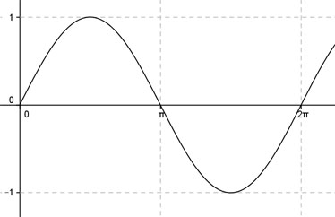Aufgabe 130 y = sin x x 4,26 π/2 y 1
Aufgabe 131 y = cos x x π/2 y 0 -0,4 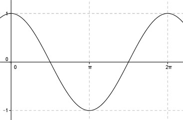
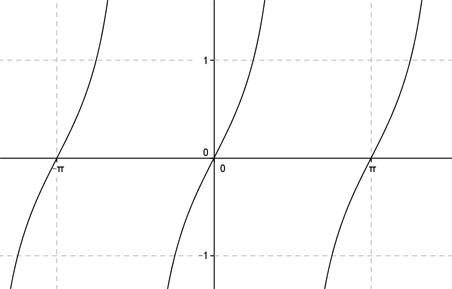Aufgabe 132 y = tan x x 2 y -1 -2
Aufgabe 133 y = cot x x 1 0 y 0,64 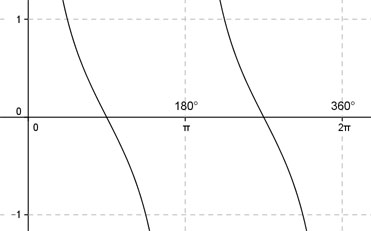
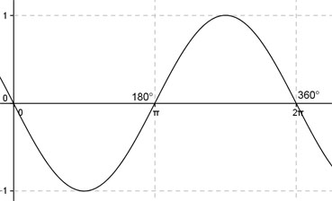Aufgabe 134 y = sin-x x 1 y -0,84 0,96
Aufgabe 135 y = cos-x x 1 2 oder 4,3 y -0,416 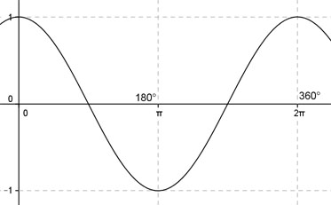
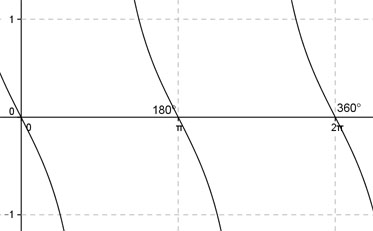Aufgabe 136 y = tan-x x 0,78 y -1 1
Aufgabe 137 y = sin2x x 2 y -0,78 0,9 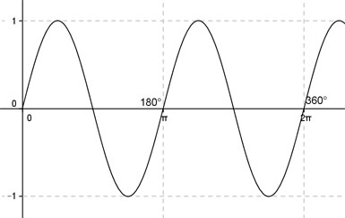
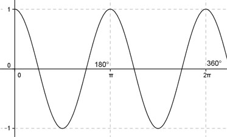Aufgabe 138 y = cos2x x 3,5 y 0,75 -0,416
Aufgabe 139 y = tan2x x 0,5 1,3 oder 2,9 oder 4,4 oder 6 y -0,6 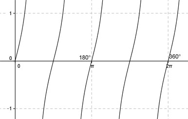
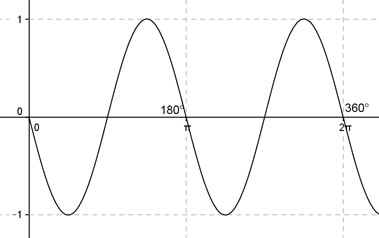Aufgabe 140 y = sin-2x x 2 y 0,76 -0,9
Aufgabe 141 y = cos-2x x 3,5 1 oder 2,1 oder 4,1 oder 5,3 y -0,416 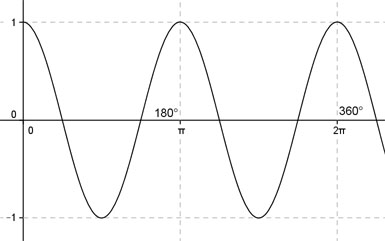
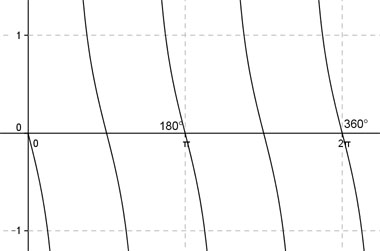Aufgabe 142 y = tan-2x x 0,5 y -1,56 0,6
Ergänzen Sie die Wertetabellen für x zwischen 0 und 5π:
Aufgabe 143 y = sin0,4x x 2 y 0,72 -0,59 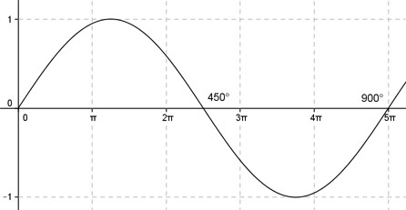
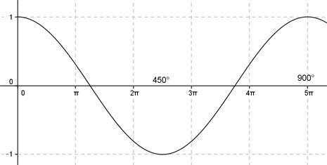Aufgabe 144 y = cos0,4x x 2π π oder 4π y 0,309
Aufgabe 145 y = tan0,4x x 3π y 0,7 -0,73 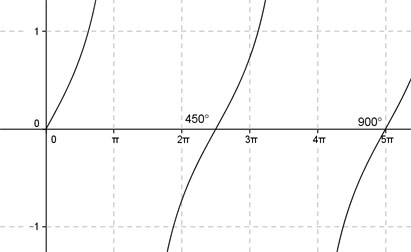
Aufgabe 146 y = sin-0,4x x 2 3π oder 14,1 y 0,59"

Aufgabe 147 y = cos-0,4x x 2π y -0,8 0,309 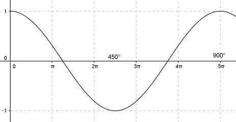
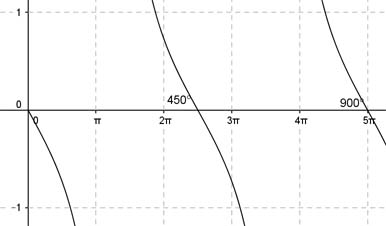Aufgabe 148 y = tan-0,4x x 3π 2π oder 14,1 y 0,73
Ergänzen Sie die Wertetabellen für x zwischen 0 und 2π:
Aufgabe 149 y = 2sin x x 1 y 2,7 -1,5 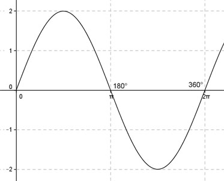
Aufgabe 150 y = 2cos x x 1 2 oder 4,3 y -0,83
Aufgabe 151 y = 2tan x x 1 y 3,1 -4,4 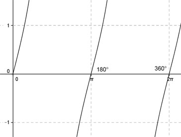
Aufgabe 152 y = -2sin x x 1 4 oder 5,4 y -1,5 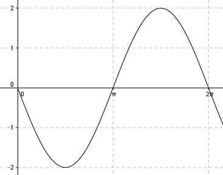
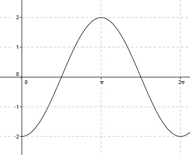Aufgabe 153 y = -2cos x x 1 y -1,1 0,83
Aufgabe 154 y = -2tan x x 1 2 oder 5,14 y 4,4 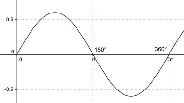
Aufgabe 155 y = 0,6sin x x 4 y -0,45 0,4
Aufgabe 156 y = 0,6cos x x 4 0,84 oder 5,44 y 0,4 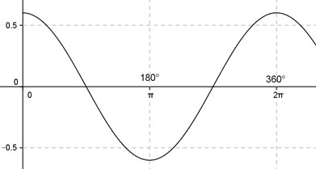
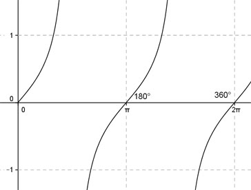Aufgabe 157 y = 0,6tan x x 4 y 0,7 0,4
Aufgabe 158 y = -0,6sin x x 4 0,73 oder 2,4 y -0,4 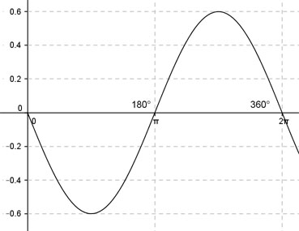
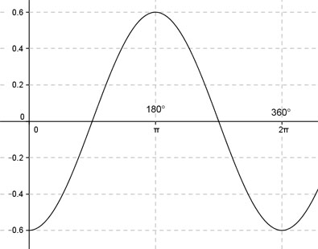Aufgabe 159 y = -0,6cos x x 4 y 0,4 -0,4
Aufgabe 160 y = -0,6tan x x 4 0,6 oder 3,74 y -0,4 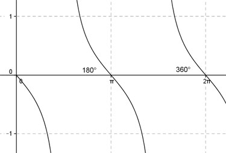
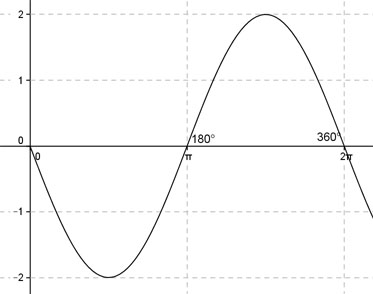Aufgabe 161 y = 2sin -x x 1 y -1,7 1,5
Aufgabe 162 y = 2cos -x x 1 2 oder 4,3 y -0,83 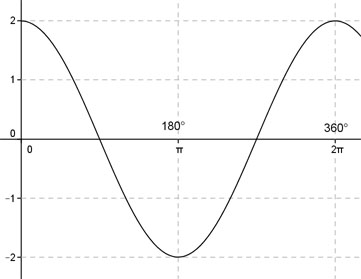
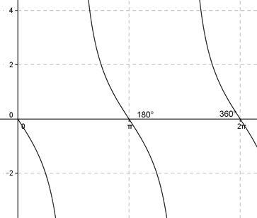Aufgabe 163 y = 2tan -x x 1 y -3,1 4,4
Aufgabe 164 y = 0,6sin -x x 4 0,73 oder 2,4 y -0,4 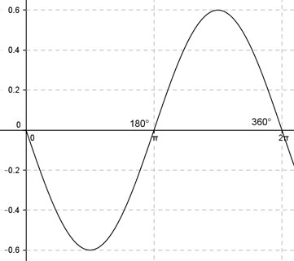
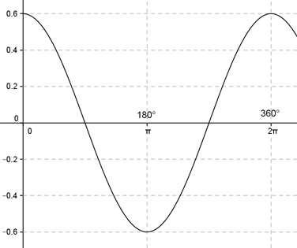Aufgabe 165 "y = 0,6cos -x x 4 y -0,4 0,4
Aufgabe 166 y = 0,6tan -x x 4 0,6 oder 3,74 y -0,4
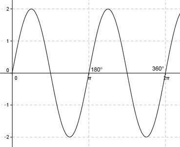Aufgabe 167 y = 2sin 2x x 1 y 1,8 -1,5
Aufgabe 168 y = 2cos 2x x 2 1 oder 2,14 oder 4,14 oder 5,3 y -0,83 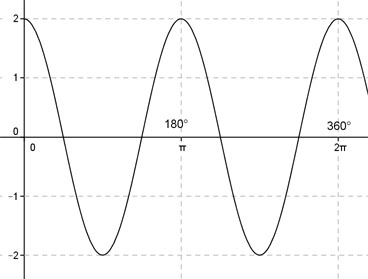
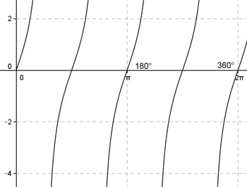Aufgabe 169 y = 2tan 2x x 2 y 2,3 -4,4
Aufgabe 170 y = 2sin(-2x) x 1 2 oder 2,7 oder 5,2 oder 5,86 y 1,5 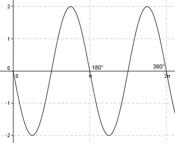
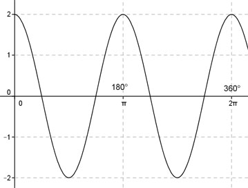Aufgabe 171 y = 2cos(-2x) x 2 y -1,3 -0,83
Aufgabe 172 y = 2tan(-2x) x 2 1 oder 2,6 oder 4,14 oder 5,7 y 4,4 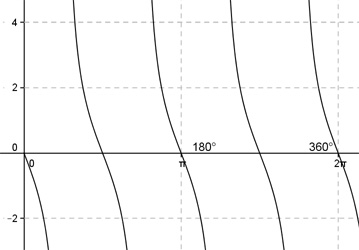
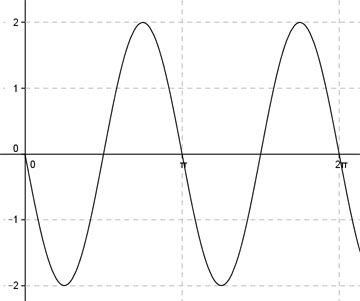Aufgabe 173 y = -2sin 2x x 1 y -1,8 1,5
Aufgabe 174 y = -2cos 2x x 1 0,5 oder 2,6 oder 3,7 oder 5,8 y -1 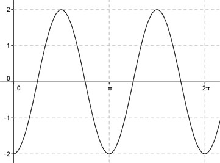
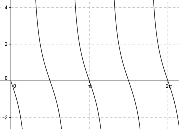Aufgabe 175 y = -2tan 2x x 1 y 4,4 -2
Aufgabe 176 y = -2sin(-2x) x 1 2 oder 2,7 oder 5,1 oder 5,9 y -1,5 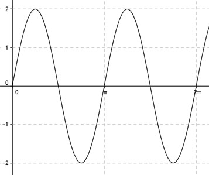
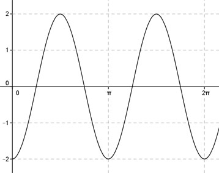Aufgabe 177 y = -2cos(-2x) x 1 y 0,83 -1
Aufgabe 178 y = -2tan(-2x) x 1 0,4 oder 2 oder 3,5 oder 5,1 y 2 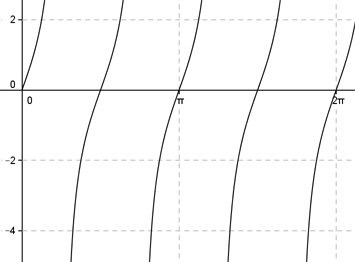
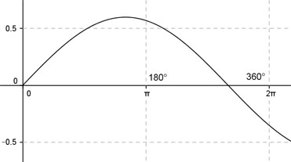Aufgabe 179 y = 0,6sin 0,6x x 1 y 0,34 -0,3
Aufgabe 180 y = 0,6cos 0,6x x 4 1 y 0,5 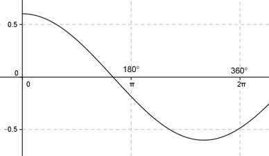
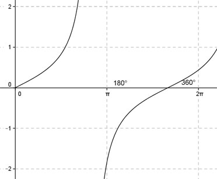Aufgabe 181 y = 0,6tan 0,6x x 4 y -0,55 1
Aufgabe 182 y = 0,6sin(-0,6x) x 1 6,1 y 0,3 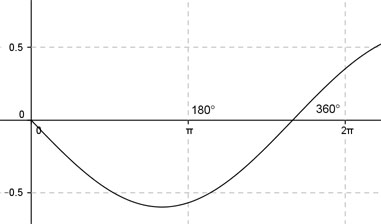
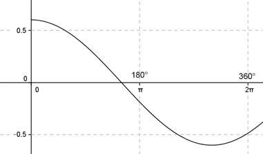Aufgabe 183 y = 0,6cos(-0,6x) x 4 y -0,44 0,5
Aufgabe 184 y = 0,6tan(-0,6x) x 4 1,7 y -1
Aufgabe 185 y = -0,6sin 0,6x x 1 y -0,34 0,3
Aufgabe 186 y = -0,6cos 0,6x x 4 1 y -0,5
Aufgabe 187 y = -0,6tan 0,6x x 4 y 0,55 -1
Aufgabe 188 y = -0,6sin(-0,6x) x 1 6,1 y -0,3
Aufgabe 189 y = -0,6cos(-0,6x) x 4 y 0,44 -0,5
Aufgabe 190 y = -0,6tan(-0,6x) x 4 1,7 y 1
Aufgabe 191 y = sin(x) - 1 x 4,26 y -1,9 0
Aufgabe 192 y = cos (x) + 2 x π/2 2 oder 4,3 y 1,6
Aufgabe 193 y = tan (x) + 1 x 2 y -1,2 0
Aufgabe 194 y = sin (-x) + 1 x 1 4,4 oder 5 y 1,96
Aufgabe 195 y = cos (-x) - 2 x 1 y -1,46 -2,42
Aufgabe 196 y = tan (-x) - 1 x 0,78 2,36 oder 5,5 y 0
Aufgabe 197 y = 2sin (x) - 1 x 1 y 0,7 -2
Aufgabe 198 y = 3cos (x) + 1 x 1 0 oder 2π y 4
Aufgabe 199 y = 0,5tan (x) - 2 x 1 y -1,2 3
Aufgabe 200 y = sin (x + 1) x 2 2,6 oder 4,8 y -0,5
Aufgabe 201 y = cos (x - 2) x 1 y 0,54 -0,4
Aufgabe 202 y = tan (x - 1) x 2 0,2 oder 3,36 y -1
Aufgabe 203 y = -sin (x - 1) x 5 y 0,76 -0,5
Aufgabe 204 y = -cos (x + 2) x 2 3,12 oder 5,4 y -0,4
Aufgabe 205 y = -tan (x - 2) x 2 y 0 -1
Aufgabe 206 y = sin (x + 1) - 1 x 2 2,1 oder 5,3 y -1
Aufgabe 207 y = cos (x - 1) + 2 x 1 y 3 2,4
Aufgabe 208 y = tan (x - 2) + 1 x 2 2,8 oder 5,9 y 2
Aufgabe 209 y = sin² x x 2 0,785 oder 2,4 oder 3,9 oder 5,5 y 0,5
Aufgabe 210 y = cos² x x 2 y 0,17 0,5
Aufgabe 211 y = tan² x x 2 1 oder 2,1 oder 4,2 oder 5,2 y 3
Aufgabe 212 y = sin² (x) - 1 x 2 y 0,17 -0,5
Aufgabe 213 y = cos² (x) + 1 x 2 0,785 oder 2,4 oder 3,9 oder 5,5 y 1,5
Aufgabe 214 y = tan² (x) - 2 x 2 y 2,8 1
Aufgabe 215 y = sin x + cos x x 2 1,75 oder 6,1 y 0,8
Aufgabe 216 y = sin x - cos x x 2 y 1,3 0,8
Aufgabe 217 y = sin x + 2 cos x x 1 1,57 oder 5,6 y 1
Aufgabe 218 y = sin x - 2 cos x x 1 y -0,24 1

Aufgabe 219 y = 3 sin x - 4 cos x x 2 1,12 oder 3,9 y 1
Aufgabe 220 y = - √3 sin x + cos x x 1 y -0,9 1
Aufgabe 221 Berechnen Sie die Amplitude von: y = - 2 sin x + √5 cos x Amplitude =
Aufgabe 222 Berechnen Sie die Amplitude von: y = 2 sin 2x - 3 cos 2x
Aufgabe 223 Berechnen Sie die Amplitude von: y = (3/2) sin x + 2 cos x Amplitude =
Ergänzen Sie die Wertetabellen für x zwischen 0 und 2π:
Aufgabe 224 y = sin 2x - sin x x 2 3,5 oder 4,71 y 1
Aufgabe 225 y = sin 2x - 2 sin x x 2 y -2,6 1
Aufgabe 226 y = cos 2x + 2 cos x + 1 x 2 0,9 oder 5,4 y 2
Aufgabe 227 y = sin x - cos 2x x 4 y -0,61 1
Aufgabe 228 y = cos x - sin 2x x 4 0 oder 5,067 oder 2π y 1
Aufgabe 229 y = sin x + cos 2x x 2 y 0,256 -1
Aufgabe 230 y = sin² x + sin x x 2 0,67 oder 3,47 y 1

Aufgabe 231 y = sin² x + cos x x 2 y 0,41 0,8
Aufgabe 232 y = 2 * cos x - sin² x x 2 0,75 oder 5,53 y 1
Aufgabe 233 Bestimmen Sie c für den dargestellten Graphen der Form y = a * sin(b * (x + c)) + d c =
Aufgabe 234 Bestimmen Sie c für den dargestellten Graphen der Form y = a * sin(b * (x + c)) + d
Aufgabe 235 Bestimmen Sie c für den dargestellten Graphen der Form y = a * sin(b * (x + c)) + d
Aufgabe 236 Bestimmen Sie b für den dargestellten Graphen der Form y = a * sin(b * (x + c)) + d
Aufgabe 237 Bestimmen Sie b für den dargestellten Graphen der Form y = a * sin(b * (x + c)) + d b =
Aufgabe 238 Bestimmen Sie b für den dargestellten Graphen der Form y = a * sin(b * (x + c)) + d
Aufgabe 239 Bestimmen Sie d für den dargestellten Graphen der Form y = a * sin(b * (x + c)) + d d =
Aufgabe 240 Bestimmen Sie d für den dargestellten Graphen der Form y = a * sin(b * (x + c)) + d
Aufgabe 241 Bestimmen Sie a für den dargestellten Graphen der Form y = a * sin(b * (x + c)) + d a =
Aufgabe 242 Bestimmen Sie a für den dargestellten Graphen der Form y = a * sin(b * (x + c)) + d
Bestimmen Sie die angegebenen Parameter
für die dargestellten Graphen der Form
y = a * sin(b * (x + c)) + d
Aufgabe 243 a = b = 2
Aufgabe 244
Aufgabe 245 a = d = -1
Aufgabe 246
Aufgabe 247 b = d = -1
Aufgabe 248
Aufgabe 249 a = b = 2, c = 1
Aufgabe 250
Aufgabe 251 a = 3; c = 2; d =
Aufgabe 252
Aufgabe 253 a = 2; c =
Aufgabe 254
Aufgabe 255 Bestimmen Sie c für den dargestellten Graphen der Form y = a * cos (b * (x + c)) + d c =
Aufgabe 256 Bestimmen Sie c für den dargestellten Graphen der Form y = a * cos (b * (x + c)) + d
Aufgabe 257 Bestimmen Sie c für den dargestellten Graphen der Form y = a * cos (b * (x + c)) + d c =
Aufgabe 258 Bestimmen Sie b für den dargestellten Graphen der Form y = a * cos (b * (x + c)) + d
Aufgabe 259 Bestimmen Sie b für den dargestellten Graphen der Form y = a * cos (b * (x + c)) + d b =
Aufgabe 260 Bestimmen Sie b für den dargestellten Graphen der Form y = a * cos (b * (x + c)) + d

Aufgabe 261 Bestimmen Sie d für den dargestellten Graphen der Form y = a * cos (b * (x + c)) + d d =
Aufgabe 262 Bestimmen Sie d für den dargestellten Graphen der Form y = a * cos (b * (x + c)) + d
Aufgabe 263 Bestimmen Sie d für den dargestellten Graphen der Form y = a * cos (b * (x + c)) + d d =
Aufgabe 264 Bestimmen Sie d für den dargestellten Graphen der Form y = a * cos (b * (x + c)) + d
Bestimmen Sie die angegebenen Parameter
für die dargestellten Graphen der Form
y = a * sin(b * (x + c)) + d
Aufgabe 265
a = b = 2
Aufgabe 266
Aufgabe 267 a = d = -1
Aufgabe 268
Aufgabe 269 b = d = -1
Aufgabe 270
Aufgabe 271 a = b = 2; c = 1
Aufgabe 272
Aufgabe 273 a = 3; c = 2; d = b = 2; c = 1
Aufgabe 274
Aufgabe 275 a = 2; c =
Aufgabe 276
zurück